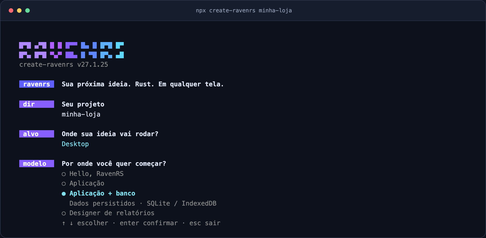

Getting started with RavenRS
This guide builds a small app step by step: a window, then the same app in the browser, then state, your own components, themes and the data grid.
Create your project#
With Node.js 20 or newer, start with one command:
npx create-ravenrs minha-lojaThe guided setup prepares Rust and the matching RavenRS CLI, then asks for a template and
whether to build for desktop, the browser or both. It creates application code, a screen test,
Git and the files your coding assistant needs. You can also use npm create ravenrs@latest minha-loja.
For an unattended setup, choose the model and target explicitly:
npx create-ravenrs minha-loja --yes --template app --target both
cd minha-loja
cargo run
cargo test
cargo ravenrs doctorWithout --yes, installing Rust, a missing toolchain component or the CLI requires your
confirmation. Existing matching installations are reused. Repeating the command preserves
application code. The first CLI installation compiles Rust sources locally and takes a few minutes.
The setup never runs sudo: it prints the Linux packages or Windows MSVC Build Tools you
need to install yourself. Windows requires the C++ workload and Windows SDK even when the
application targets the browser, because the generator itself is a native program.
Already have Rust? Install the CLI directly. Use the release tag to keep the CLI, MCP, examples, skill and framework crates on the same version:
cargo install --git https://github.com/alexkads/RavenRS --tag v27.1.23 --locked cargo-ravenrs
cargo ravenrs new minha-loja --template hello --target both --yesChoose a template and target#
| Template | Starting point | Storage |
|---|---|---|
hello |
A card, a counter and buttons | Reactive state |
app |
A task list with navigation, forms and commands from ravenrs-app |
In memory |
app-sqlite |
The same task application with persistence | SQLite on desktop; IndexedDB in the browser |
relatorios |
The RavenRS report designer | Report layouts |
Use --target desktop, --target web or --target both. The default with --yes is
hello for desktop. The SQLite model requires Rust 1.89 or newer; the bootstrap installs
the stable toolchain for you. Templates and the skill are embedded in the CLI from its release;
they are not fetched from the changing master branch.
| Flag | Effect |
|---|---|
--yes |
Accept prerequisite installations and use defaults for unanswered choices |
--no-git |
Skip git init |
--no-ai |
Skip assistant configuration |
--no-check |
Skip the final application compilation; keep the MCP handshake |
--plugin |
Use the version-pinned Claude marketplace plugin instead of a copied local skill |
Your project structure#
minha-loja/
├── Cargo.toml # published crate versions, no checkout paths
├── rust-toolchain.toml
├── src/
│ ├── main.rs # native window
│ └── lib.rs # app() and the shared UI
├── tests/screen.rs # main-screen render test
├── web/index.html # when web or both is selected
├── AGENTS.md # commands and project rules
└── CLAUDE.md # points to AGENTS.mdStart changing app() in src/lib.rs. The desktop entry point opens that view in a
native window. A web target includes its browser entry point and HTML canvas. Run
cargo test to check that the main screen still renders.
Work with a coding assistant#
The generator registers the same offline MCP server for Claude Code (.mcp.json),
VS Code / Copilot (.vscode/mcp.json), Cursor (.cursor/mcp.json) and Codex
(.codex/config.toml). Every configuration launches cargo ravenrs mcp.
Open the folder with claude, code . or your preferred assistant. The project includes
the version-matched RavenRS skill and AGENTS.md commands. The instructions tell the
assistant to consult component_api and component_examples before inventing a method,
use design tokens and existing components, and build record applications with ravenrs-app.
Claude settings allow the project's Cargo commands and read-only RavenRS MCP tools.
Your editor may still require its normal workspace trust approval.
For a project that already exists, run:
cargo ravenrs ai
cargo ravenrs doctorAfter updating framework versions, install the matching CLI tag and run ai again.
It updates marked blocks and RavenRS configuration entries, preserving custom instructions
outside those blocks. Keep personal notes outside the generated markers. It does not migrate
application source. Use cargo ravenrs ai --plugin for the marketplace mode.
doctor checks explicit dependency versions, generated AI files and real MCP handshakes.
It exits with an error when a version or configuration is stale. With the npm entry point,
npx create-ravenrs doctor also checks prerequisites and never installs anything.
Workspace-inherited dependency versions are tracked separately in
issue #209.
Run in the browser#
Choose web or both when creating the app. In the generated project:
cargo check --target wasm32-unknown-unknown
cargo build --release --lib --target wasm32-unknown-unknown
cargo install wasm-bindgen-cli --version 0.2.130 --locked
wasm-bindgen --target web --out-dir web/pkg target/wasm32-unknown-unknown/release/minha_loja.wasm
python3 -m http.server -d web 8080Open http://localhost:8080. Replace minha_loja with your package name, using underscores
for hyphens. wasm-bindgen-cli must match the framework's pinned wasm-bindgen version.
Serve the page over HTTP rather than opening the HTML file directly.
Understand the pieces#
The following walkthrough shows how to build these pieces yourself: a window, browser entry point, state, components, themes and a data grid. For the CLI's behavior and validation details, see cargo-ravenrs and create-ravenrs.
1. A window#
cargo new hello-raven && cd hello-ravencargo add ravenrs// src/main.rs
use ravenrs::prelude::*;
fn app() -> impl View {
VStack::new((
Text::new("Hello, RavenRS").style(TextStyle::Display),
Text::new("Drawn on the GPU.").foreground(Semantic::InkMuted),
))
.padding(32.0)
}
fn main() -> Result<(), ravenrs::native::PlatformError> {
ravenrs::native::run(app(), ravenrs::native::WindowOptions::new("Hello").size(800.0, 500.0))
}cargo run2. The same app in the browser#
Put the UI in src/lib.rs so both targets share it, and add a web entry point:
[lib]
crate-type = ["cdylib", "rlib"]
[target.'cfg(target_arch = "wasm32")'.dependencies]
wasm-bindgen = "=0.2.130"
wasm-bindgen-futures = "0.4"// src/lib.rs
use ravenrs::prelude::*;
pub fn app() -> impl View {
Text::new("Hello from the browser").style(TextStyle::Display).padding(32.0)
}
#[cfg(target_arch = "wasm32")]
#[wasm_bindgen::prelude::wasm_bindgen(start)]
pub fn start() {
wasm_bindgen_futures::spawn_local(async {
// Keep the returned app alive for as long as the page shows it.
if let Ok(app) = ravenrs::web::start(app(), ravenrs::web::WebOptions::new("raven-canvas")).await {
std::mem::forget(app);
}
});
}A page with a <canvas id="raven-canvas"> sized by CSS hosts it; examples/hello-world/web/index.html is a complete one, and scripts/build-web.sh shows the build (cargo build --target wasm32-unknown-unknown followed by wasm-bindgen --target web).
3. State#
State<T> holds a value. Views that read it rebuild when it changes; nothing else does.
let count = State::new(0);
let inc = count.clone();
VStack::new((
Text::bound(&count, |n| format!("{n} clicks")),
Button::new("Click").on_click(move || inc.update(|n| *n += 1)),
))Controls take a Binding<T>, a read/write view of a state: Toggle::new(enabled.binding()), TextField::new(name.binding()), Slider::new(volume.binding()). Binding::map focuses on one field of a struct, and Derived<T> caches a value computed from other states.
4. Your own components#
A Component keeps its state in fields and composes views in body:
struct Counter { count: State<i32> }
impl Component for Counter {
fn body(&self) -> impl View {
let c = self.count.clone();
Button::new("Add").on_click(move || c.update(|n| *n += 1))
}
}For full control, implement View and use BuildCx. This badge draws itself, reacts to hover and handles clicks:
struct Pill(&'static str);
impl View for Pill {
fn build(&self, cx: &mut BuildCx<'_>) -> NodeId {
let theme = *cx.theme();
let fill = if cx.is_hovered() { theme.color(Semantic::Accent) } else { theme.color(Semantic::Control) };
let label = cx.child(&Text::new(self.0));
let node = cx.container(
ravenrs::layout::LayoutStyle { padding: (6.0, 12.0).into(), ..Default::default() },
&[label],
Paint::Quad(QuadPaint { corner_radius: 999.0, ..QuadPaint::new(fill) }),
);
cx.on_click(node, std::rc::Rc::new(|| println!("clicked")));
cx.cursor(node, CursorIcon::Pointer);
node
}
}cx.use_state gives a view instance its own state (open/closed, scroll position), cx.overlay opens a floating layer, cx.wake_at schedules a rebuild (animations, timers) and cx.shortcut registers app-wide keys.
5. Themes#
Pick a theme when you start the app, or switch at runtime:
ravenrs::native::run(app(), ravenrs::native::WindowOptions::new("App").theme(Theme::raven_light()))ThemeSwitcher::new() toggles Raven Dark, Light and Glass, or the app's own three with .themes(dark, light, glass), ThemePicker does it from a small menu, and ThemeEditor changes the tokens of the theme on screen and hands them over as JSON (Theme::to_tokens_json, Theme::from_tokens_json); any component can do the same with cx.theme_state().set(...). Components use semantic roles (Semantic::Ink, Semantic::Accent, Semantic::SurfaceElevated…) so they follow the theme automatically. The tokens are documented in docs/design-system.
6. The data grid#
use ravenrs::widgets::grid::Value;
let data = GridData::new(vec![
vec![Value::from("Northwind"), Value::from("Brazil"), Value::from(240)],
vec![Value::from("Aurora"), Value::from("Chile"), Value::from(86)],
]);
DataGrid::new(data, [
GridColumn::text("Customer").editable(),
GridColumn::text("Country"),
GridColumn::number("Seats").summary(Summary::Sum),
])
.selection_mode(SelectionMode::Multiple)
.height(480.0)Sorting, the filter row (>100, 10..20, yes, or an expression such as [Seats] > 10 And [Country] = 'Brazil'), search, grouping, resizing, the column chooser, editing and CSV export work out of the box; only the visible rows are built, so 100,000+ rows stay smooth.
7. Quality checks#
ravenrs-lint checks what the compiler cannot: colors from Semantic roles, text from TextStyle, the 4px grid, named icon buttons, one primary action, and no state or blocking work in body. Set it up once and it fails the build of anyone, person or coding agent, who breaks a rule:
cargo install ravenrs-lint --locked
cargo ravenrs-lint --init --language en # or pt-BR
cargo ravenrs-lint --gate--init turns on the strictest rustc and Clippy levels, adds a test so cargo test runs the rules, and writes the same instructions for Codex, Claude, Gemini and Copilot. See its README for every rule.
Next#
- Browse every component in the live gallery and its source.
- Install Raven Finanças, a complete family finance app built with RavenRS, to see it all in everyday use.
- Read the architecture to see how build, layout, paint and render fit together.
- The API documentation lists every type and method.
Official context for AI assistants#
Read the AI development guide for the RavenRS proposal, official Markdown sources,
version-matched MCP tools and a starting prompt. The site publishes llms.txt and llms-full.txt
from these same guides so assistants can consult authoritative context.
Interactive installation#

The npm preparer asks for your target and template before starting, with arrow-key selection
and descriptions. During installation, animated tasks show elapsed time and current build activity.
Full Cargo/Git output is saved to a temporary installation log; a failing task prints its last output
and the log path. Use npx create-ravenrs minha-loja --verbose to stream all output.
Escape cancels a menu; Ctrl+C cancels an active task. NO_COLOR disables colors. Redirected output
and simple terminals show plain logs; narrow terminals use text prompts. --yes still authorizes
prerequisite installation and selects defaults for unanswered choices.